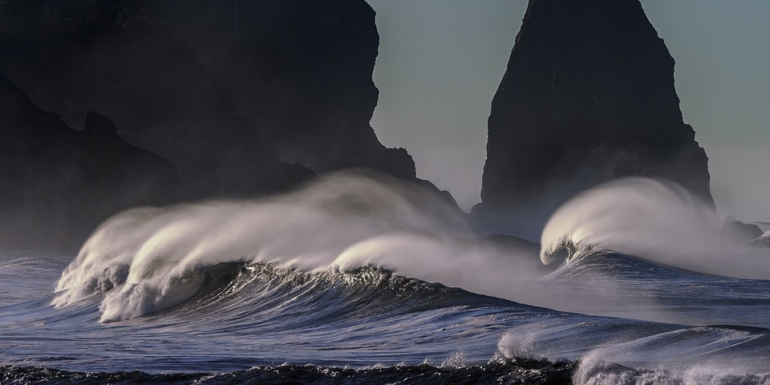

Big Wave Surfing

The biggest waves in the world
- Praia do Norte | Nazaré, Portugal
- Jaws/Peahi | Maui, Hawaii
- Teahupoo | Tahiti, French Polynesia
- Shipstern Bluff | Tasmania, Australia
- Mavericks | Half Moon Bay, California
link to
Nazaré (Portuguese pronunciation:
[nɐzɐˈɾɛ] (listen)) is a Portuguese town and municipality located in the Oeste region, in the historical province of Estremadura, and in the Leiria District.
The municipality has a population of 14,889 in an area of 82.43 km2,[2] while the town itself has around 10,000 inhabitants.[1]
It is one of the most popular seaside resorts in the Silver Coast (Costa de Prata).